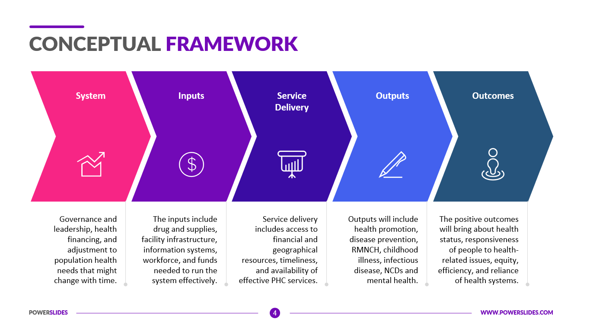

L’option SLAM est destinée aux étudiants qui s’orientent vers les métiers liés à la conception et la maintenance de programmes applicatifs. Grâce à des cours spécifiques, les diplômés seront capables de gérer un parc informatique ou d’administrer un réseau au sein d’une entreprise. Ils pourront également gérer l’intégration, la sécurisation et la configuration des serveurs, mais aussi des postes clients et des équipements d’interconnexion.
| Notion | Définition | Image |
| Framework | Un Framework est une boite à outils pour un développeur web. Frame signifie cadre et work se traduit par travail. Un Framework contient des composants autonomes qui permettent de faciliter le développement d’un site web ou d’une application. Ces composants résolvent des problèmes souvent rencontrés par les développeurs (CRUD, arborescence, normes, sécurités, etc.). Ils permettent donc de gagner du temps lors du développement du site. |  |
| Java | Java est un langage de programmation largement utilisé pour coder des applications web. Il a été fréquemment choisi parmi les développeurs depuis plus de deux décennies, des millions d'applications Java étant utilisées aujourd'hui. Java est un langage multiplateforme, orienté objet et centré sur le réseau, qui peut être utilisé comme une plateforme à part entière. Il s'agit d'un langage de programmation rapide, sécurisé et fiable qui permet de tout coder, des applications mobiles aux logiciels d'entreprise en passant par les applications de big data et les technologies côté serveur. |
|
| Javascript | JavaScript est un langage de programmation utilisé par les développeurs pour concevoir des sites web interactifs. Les fonctions JavaScript peuvent permettre d'améliorer l'expérience utilisateur d'un site web, de la mise à jour des flux de médias sociaux à l'affichage d'animations et de cartes interactives. En tant que langage de script côté client, c'est l'une des principales technologies du web. Lors de la navigation sur Internet, à tout moment vous pouvez par exemple voir un carrousel d'images, un menu déroulant « Cliquer pour afficher » ou le changement dynamique de la couleur des éléments d'une page web. Tout cela est possible grâce à JavaScript. |
|